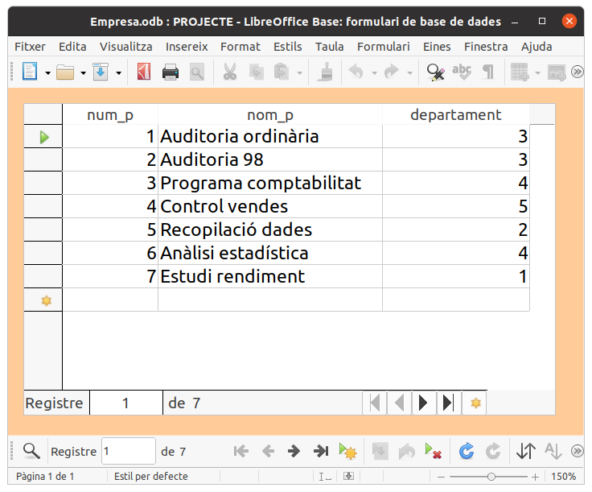
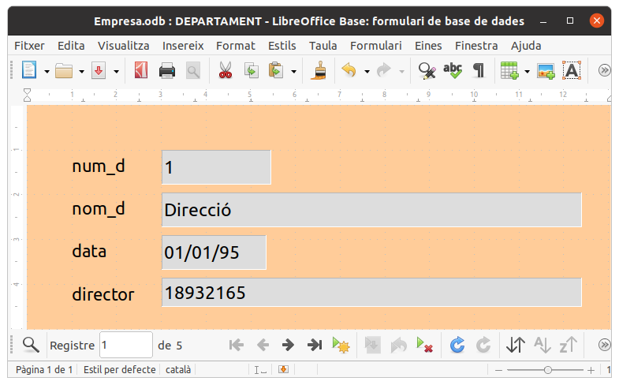
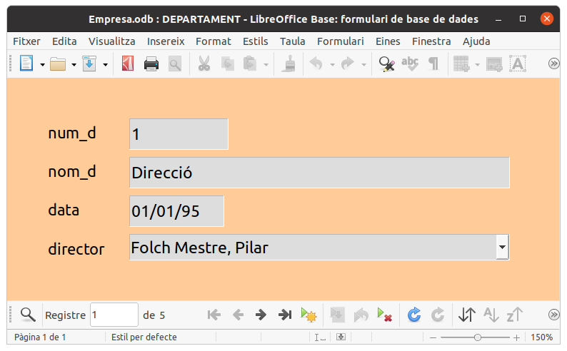
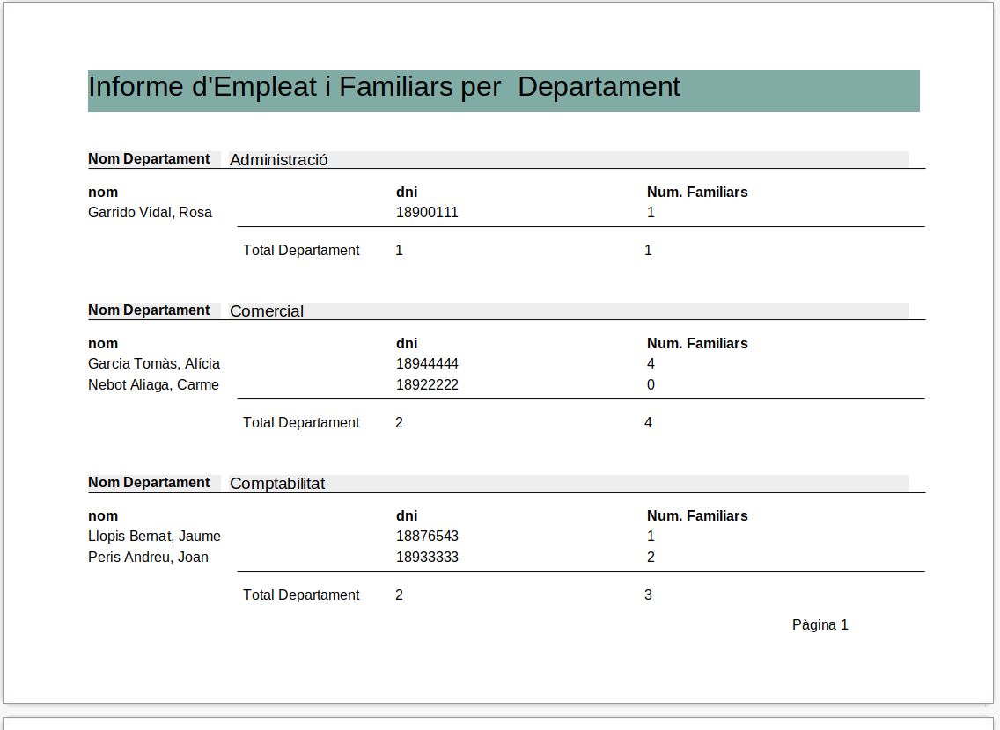

1.3 Formularis i Informes
3.1) Crear un formulari, utilitzant l'assistent, per a la taula PROJECTE, posant tots els camps i totes les opcions per defecte. Us posarà com a nom del formulari també PROJECTE. Com veureu, aquest formulari que és amb format "Com a full de dades", és molt paregut a la presentació de les dades de la taula.

3.2) Crear un formulari, utilitzant l'assistent, per a la taula DEPARTAMENT, però en el moment de triar els camps, deixar per a l'últim lloc el camp director . I a més en el punt 5 de l'assistent, "5. Organitzeu els controls", triar el primer format "En columnes - Etiquetes a l'esquerra". Us posarà com a nom del formulari també DEPARTAMENT.

3.3) Al formulari DEPARTAMENT li hem donat l'aspecte En columnes. Aquest aspecte agrupa cada control amb l'etiqueta, per si s'han de recol·locar, que vagen junts. Ara intentarem canviar el quadre de text corresponent al director per un Quadre de Llista, com els del formulari Treballa. El primer que hem de fer és desagrupar-los. Després amb el botó de la dreta podem convertir el Quadre de Text en Quadre de llista. Haurem de modificar les propietats del control per a que ens porte les dades d'una consulta SQL. Aquesta consulta ha d'agafar el nom i el dni (en aquest ordre) de la taula EMPLEAT, ordenant pel nom de forma ascendent. En la pestanya General modifiqueu també la propietat Desplegable a Sí. D'aquesta manera estem aconseguint un ComboBox. I poseu en el Recompte de línies el valor 8, per a que es mostren tots els empleats. Aquest hauria de ser l'aspecte final del formulari:

3.4) Construir un formulari amb l'aspecte de la imatge. Per aconseguir-ho haureu de triar en la primera pantalla de l'assistent els camps de la taula EMPLEAT , i en la següent pantalla afegir un subformulari basat en la relació FAMILIAR. En el punt 5 de l'assistent, "5. Organitzeu els controls", triarem la disposició "En columnes - Etiquetes a l'esquerra" per al formulari principal i "Com a full de dades" per al subformulari. Guardeu-lo com Empleat-Familiar:
3.5) Crear un informe que diga el nombre de familiars de cada empleat de cada departament. Haurà de tenir el següent aspecte. Guardeu-lo amb el nom Informe:

Llicenciat sota la Llicència Creative Commons Reconeixement NoComercial SenseObraDerivada 2.5